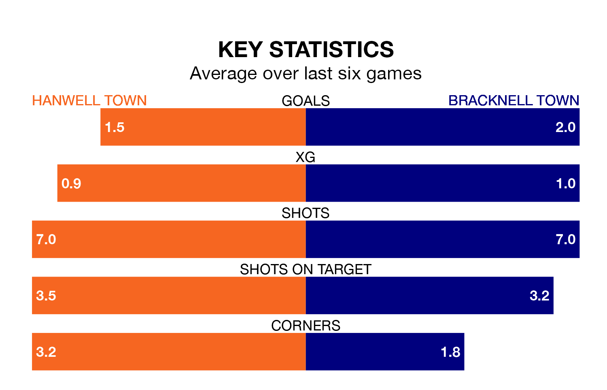

Hanwell Town host Bracknell Town on Saturday at Reynolds Field in the Southern League Premier South.
In their last league match, on March 2, Hanwell beat Walton and Hersham 2-1 away.
Bracknell also won, 3-2 at home against Merthyr Town on March 9.
With 62 goals in 33 games so far this season, Bracknell are the league's joint-third-highest scorers with 1.9 goals per game. And they are conceding at an average rate, letting in 56 goals at a rate of 1.7 per game.
Hanwell, meanwhile, are average scorers, with 1.7 goals per game. They have conceded 1.8 goals per game.
In the last 10 years, Hanwell and Bracknell have played each other on six occasions. Bracknell won four of them and they drew twice.
On average, Hanwell scored 1.0 goal and Bracknell 2.2 in those matches.
Their last meeting was on December 2, when Bracknell won 3-1 at home.
Bracknell Town are seventh in the table after 33 games, of which they have won 15 and drawn four, earning 49 points.
Hanwell Town are eight places behind the away side in 15th, with nine wins and 11 draws putting them on 38 points.
The hosts are in mixed form in the Southern League Premier South, with two wins and three draws from their last six games.
With three wins and a draw over that period, Bracknell's form is slightly better – they have taken 10 points from 18, compared to Hanwell's nine.
Updated: 15:10 (UTC), 15/03/24